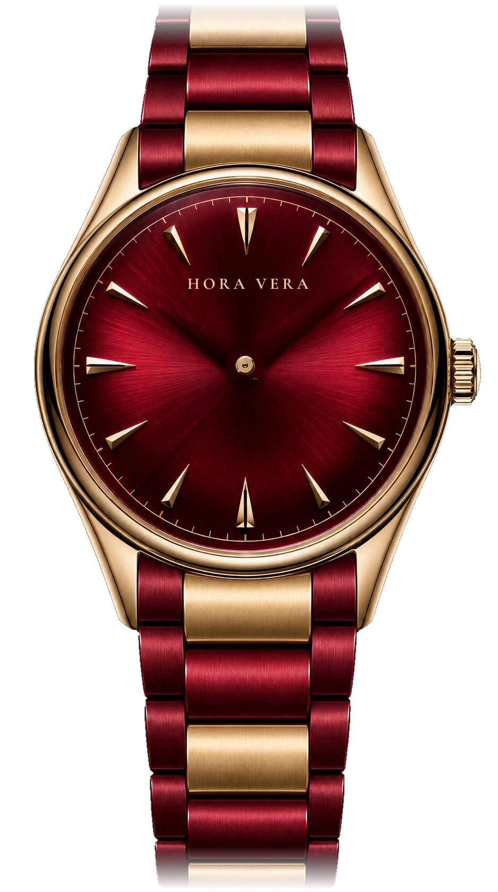
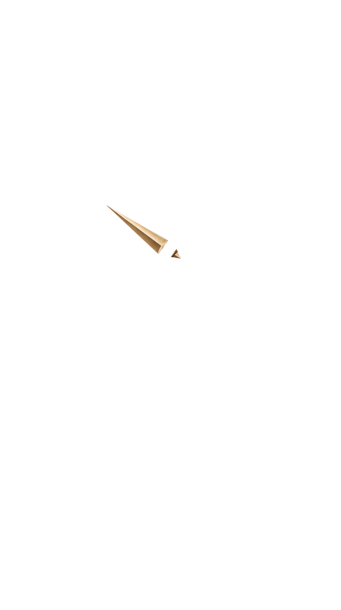
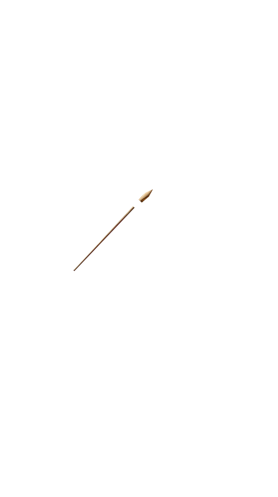

- N. 031Rubino e oro
- N. 036La tigre
- N. 038Cronografo grafite
- N. 041Verde e diamanti
- N. 044Cronografo cuoio
- N. 049Subacqueo blu e oro
- N. 052Bianco e acciaio
- N. 057Cronografo blu
- N. 058la tua riga
N. 031 · Rubino e oro · 1 di 8





N. 031 · Sobieski
Vienna, 12 settembre 1683
Per un allevatore di cavalli. Volgeva l'anno 1683, e la cavalleria scendeva dalla collina.